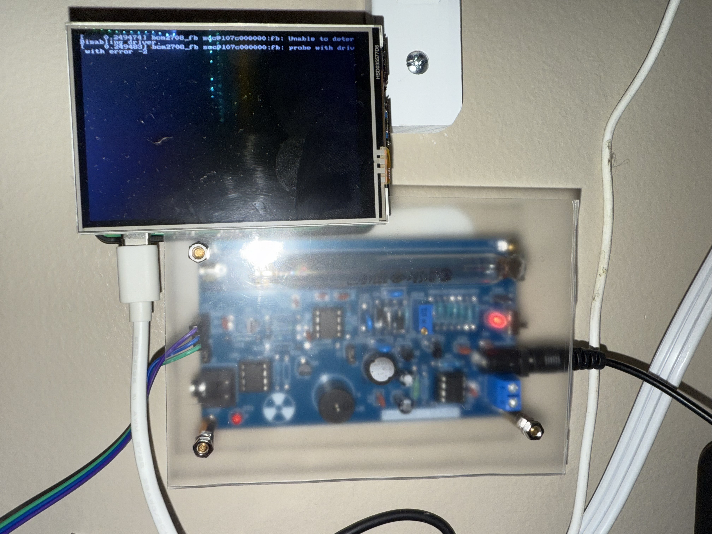

╔═══════════════════════════════════════════════════════════════╗
║ SYSTEM STATUS: ONLINE | SENSOR: ACTIVE | DANGER LEVEL: VAR ║
╚═══════════════════════════════════════════════════════════════╝
◆ REAL-TIME RADIATION LEVELS ◆
--
COUNTS PER MINUTE
AVERAGE
--
PEAK
--
STATUS
INITIALIZING
µSv/h
--
SYSTEM BOOT SEQUENCE INITIATED...
CALIBRATING GEIGER-MÜLLER TUBE...
ESTABLISHING DATA LINK...
◆ DETECTION HARDWARE ◆

┌─────────────────────────────┐
│ MODEL: GMC-320 Plus │
│ TUBE: M4011 GM Tube │
│ SENSITIVITY: 0.00812 cpm/µR│
│ ENERGY: 20keV - 1.2MeV │
│ INTERFACE: USB Serial │
└─────────────────────────────┘
ACTIVE MONITORING ZONES:
▸ BRADLEY-RADIUM-1955 [HOT]
▸ LINDEN-NOSPICE-1970s [SAFE]
▸ AMBIENT BACKGROUND [BASELINE]
▸ STORAGE VAULT [MONITORED]
⚠️ CAUTION: RADIOACTIVE MATERIALS PRESENT ⚠️
This monitoring system tracks live radiation levels from vintage radium timepieces.
Maintain safe distances. Follow all handling protocols.